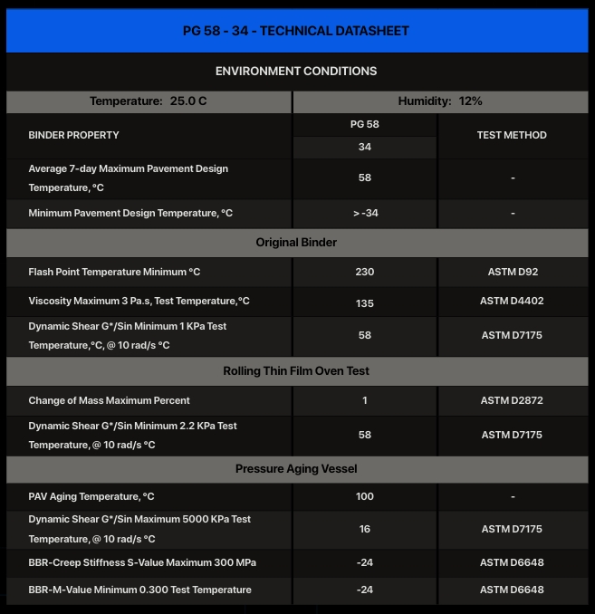

Bitumen PG 58‑34 – General Description │ Iran Bitumen Supply │ IBITMCO
Bitumen PG 58‑34 is a Superpave Performance Grade asphalt binder specifically engineered for regions that experience cold to very cold winters combined with mild to warm summer temperatures. According to the Superpave grading system, the designation PG 58‑34 indicates that the binder can resist rutting at high pavement temperatures up to 58°C while maintaining exceptional flexibility at low pavement temperatures down to –34°C. This makes PG 58‑34 one of the preferred binders for cold‑climate road construction, where resistance to thermal cracking is a critical performance requirement. PG 58‑34 is widely used in pavement structures exposed to low‑temperature stress, freeze–thaw cycles, and moderate traffic loading. Its high level of low‑temperature elasticity helps prevent transverse and longitudinal cracking during severe winter conditions, while its moderate high‑temperature stiffness provides adequate resistance to rutting during warmer months. Because of this balanced performance, PG 58‑34 is commonly selected for northern regions, mountainous areas, and cold‑climate countries where winter temperatures routinely fall well below freezing. Manufactured in full compliance with AASHTO M320 specifications, Bitumen PG 58‑34 offers consistent quality and predictable performance across all production batches. The binder is formulated to meet strict requirements for viscosity, stiffness, elasticity, and aging resistance, ensuring reliable behavior throughout the pavement’s service life. Its rheological properties provide excellent workability during mixing and compaction, while maintaining the flexibility needed to withstand extreme cold without cracking.
Key Specifications
PG 58‑34 is classified as a Performance Grade asphalt binder with a maximum pavement design temperature of 58°C and a minimum pavement design temperature of –34°C. This grading reflects its ability to resist rutting at moderate summer temperatures and to remain highly flexible in severe winter conditions. Compliance with AASHTO M320 confirms that PG 58‑34 meets all required standards for Superpave binders in both original and aged states, ensuring long‑term durability and stable performance in cold‑climate environments.
Main Applications
Bitumen PG 58‑34 is widely used in the construction and rehabilitation of highways, regional roads, and municipal networks located in cold or very cold climates. It is particularly effective in areas where pavements are exposed to extreme winter temperatures, frost heave, and repeated freeze–thaw cycles. Rural roads, mountain passes, and northern transportation corridors frequently specify PG 58‑34 because of its superior resistance to low‑temperature cracking. It is also used in asphalt overlays and maintenance projects where improving cold‑weather performance is a priority.
Key Benefits
The primary advantage of PG 58‑34 is its exceptional low‑temperature flexibility, which significantly reduces the risk of thermal cracking during harsh winter conditions. Its moderate high‑temperature stiffness provides adequate protection against rutting during warmer months, resulting in pavements that remain smooth and durable throughout the year. PG 58‑34 also offers strong adhesion to aggregates and stable behavior during mixing and compaction, contributing to uniform, high‑quality asphalt mixtures. Its ability to maintain performance across extreme temperature variations makes it a reliable and cost‑effective choice for cold‑climate road construction.

Specification of Bitumen PG 58-34